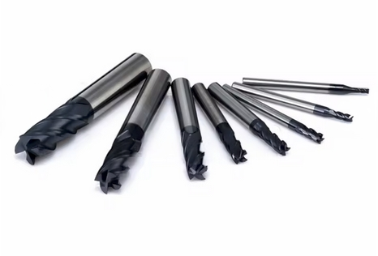

Introduction
==================================
This lab will cover the fundamental steps involved in setting up a CNC machine,
encompassing both mills and lathes.
The lab focuses on three key setup aspects:
- **Stock material** setup
- **Work Coordinate System (WCS)** setup
- **Tool** setup
1 - Tool Length Offset
==================================
This section outlines the procedures for:
- setting tools in the tool holder
- Loading tools
- Machine navigation
- Tool offset setting
|||||||||||||||||||||||||||||||||||||||||||||||||||||||||||||
|| MILL ||
[[y! Before you Start!
Make sure you have the following.
- **Tool holders **
- **End mills, drills, or other tools needed for your toolpaths**

- **Tool Setter **
<img src="resources/toolSetter.jpg" alt="Z Offset Setter" width="200"/>
]]
Loading Tools
-----------------------------
- **Make sure the machine is in a safe state before loading any tools.**
- **Refer to the setup sheet generated from your CAM program and identify the required tools and their corresponding slots.**
- On the machine controll go to MDI mode as explained in class.
- Enter the tool number that you want the machine to switch to. For example "T1" for tool #1 slot.
- Press the "ATC FWD" or the "ATC REV" which will trigger a tool change to the tool number previously entered.
- Now that the machine is in the desired tool slot. Place the tool holder in the spindle and press and HOLD the "Tool Release" button.
Measuring tool offsets
-----------------------------
- DESCRIBE HOW TO USE JOG MODE AND DIFFERENT INCREMENTS
- THEORY OF OPERATION OF TOOL SETTER
- PLACEMENT OF TOOL SETTER
- JOG TOOL TO TOOL SETTER AND MEASURE TOOL OFFSET
- REPEAT FOR EVERY TOOL
|| LATHE ||
[[y! Prerequisites
Make sure you have all the tools needed for your program ready as well as a tool
setter before starting this section of the lab.
]]
Loading Tools
-----------------------------
- DESCRIBE HOW TO RELEASE/LOAD A TOOL
- USE MDI MENU TO CHANGE TO DIFFERENT TOOL SLOTS
- LOAD TOOLS IN SAME ORDER AS SETUP SHEET FROM CAM PROGRAM
Measuring tool offsets
-----------------------------
- DESCRIBE HOW TO USE JOG MODE AND DIFFERENT INCREMENTS
- THEORY OF OPERATION OF TOOL SETTER
- PLACEMENT OF TOOL SETTER
- JOG TOOL TO TOOL SETTER AND MEASURE TOOL OFFSET
- REPEAT FOR EVERY TOOL
|||||||||||||||||||||||||||||||||||||||||||||||||||||||||||||||||||
2 - Work Coordinates
==================================
WRITE AN INTRO TO WORK COORDINATES AND WHY THEY ARE IMPORTANT.
QUICK SUMMARY OF WHAT THIS SECTION WILL COVER.
[[y! Prerequisites
Make sure the stock to be machined has already been properly loaded into the
vice.
]]
|||||||||||||||||||||||||||||||||||||||||||||||||||||||||||||
|| MILL ||
- EXPLAIN THEORY OF OPERATION OF 3D PROBE
- SELECT THE RIGHT WCS BEING USED IN CAM PROGRAM
- LOAD 3D PROBE IN EMPTY TOOL SLOT
- EXPLAIN HOW TO USE PROBE
- HOW TO ENTER X, Y, AND Z WORK OFFSETS INTO THE DESIRED WCS
- SETTING Z OFFSET USING THE TOOL SETTER
|| LATHE ||
DESCRIBE STEPS TO SET WCS IN LATHE
|||||||||||||||||||||||||||||||||||||||||||||||||||||||||||||||||||